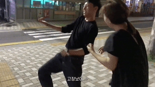

Oh my gosh Don't you know I'm a Savage? I'm a Killa 너를 깰 ae 아직도
가리고 환각을 펼친 너 팰라 We Holler 두렵지 않아 너 너 Hit you harder 날
밀어 넣어 Deep fake on me 준비가 안된 무대로 몰아넣어 Fake on me Got
everybody mock up to me 수치를 느끼게 멘탈을 흔들어놔 싸늘한 관중 무너져
Ae 더는 널 못 참아 Say No 두고 봐 난 좀 Savage 너의 Dirty 한 Play 더는
두고 볼 수 없어 나를 무너뜨리고 싶은 네 환각들이 점점 너를 구축할 이유가
돼 I'm a Savage 널 부셔 깨 줄게 Oh I'm a Savage 널 짓밟아 줄게 Oh Get me
get me now Get me get me now (Zu Zu Zu Zu) 지금 나를 잡아 아님 난 더
Savage (Zu Zu Zu Zu) Get me get me now Get me get me now (Zu Zu Zu Zu)
이젠 내가 너를 잡아 Now I'm a Savage Gimme gimme now Gimme gimme now (Zu
Zu Zu Zu) 너의 말이 보여 네 약점 Algorithm (Zu Zu Zu Zu) 김이 김이 나
김이 김이 나 (Zu Zu Zu Zu) MA ae SYNK 방해 말고 꺼져 Savage (Zu Zu Zu
Zu) Mmmh Everybody looks at me 익숙하잖니 양보해 참아야만 돼 어른스럽게
I'm locked up in the glass 난 놀고 싶은데 너무 끔찍한 기대 그런 환각
틀에 나를 가둬 놔 I'm going 광야로 Game in 물리쳐 교묘한 이간질 And my
ae로부터 멀어지게 만들 회심찬 네 Trick We gone 광야로 Game in 베어버려
내 빛의 검 데미지를 입은 네게 인정사정 볼 것 없는 펀치 그것 봐 난 좀
Savage 너의 재생력을 막아 흐트러놔 빼놔 잊지 말아 여긴 바로 광야 너의
시공간은 내 뜻대로 Make it break it I'm a Savage 널 부셔 깨 줄게 Oh I'm
a Savage 널 짓밟아 줄게 Oh Get me get me now Get me get me now (Zu Zu Zu
Zu) 지금 나를 잡아 아님 난 더 Savage (Zu Zu Zu Zu) Get me get me now Get
me get me now (Zu Zu Zu Zu) 이젠 내가 너를 잡아 Now I'm a Savage Gimme
gimme now Gimme gimme now (Zu Zu Zu Zu) 너의 말이 보여 네 약점 Algorithm
(Zu Zu Zu Zu) 김이 김이 나 김이 김이 나 (Zu Zu Zu Zu) MA ae SYNK 방해
말고 꺼져 Savage (Zu Zu Zu Zu) 위기에 빠진 날 지켜준 건 너였어 My naevis
we love U My victory 하나의 SYNK DIVE 모두 네가 만들어준 기회란 거 I
know your sacrifices Oh My naevis we love U 알아 우린 반드시 네 기억들을
찾아줄게 우린 만나 꼭 부활 그다음 Savage Savage Yeah Get me get me now
Get me get me now (Zu Zu Zu Zu) 지금 나를 잡아 아님 난 더 Savage (Zu Zu
Zu Zu) Get me get me now Get me get me now (Zu Zu Zu Zu) 이젠 내가 너를
잡아 Now I'm a Savage Gimme gimme now Gimme gimme now (Zu Zu Zu Zu) 너의
말이 보여 네 약점 Algorithm (Zu Zu Zu Zu) 김이 김이 나 김이 김이 나 (Zu
Zu Zu Zu) MA ae SYNK 방해 말고 꺼져 Savage (Zu Zu Zu Zu) Ha ha What?
Welcome to KwangYa

🧝♀️ [ "Jaevis" 생일파티 공유의 건]🧝♀️
💗 ~ My Jaevis, We Love U ~ 💗
안녕하세요, ae - VIP 여러분.
당신을 "secret" 파티에 초대합니다.
Date: 10월 30일 SAT 19시 30분
Map: 37.53455764124111,
126.99363538509839